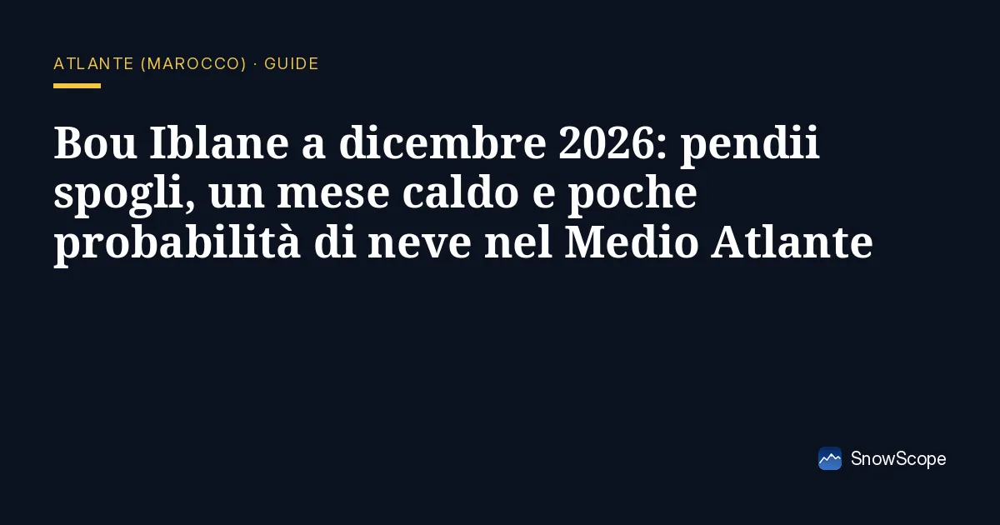
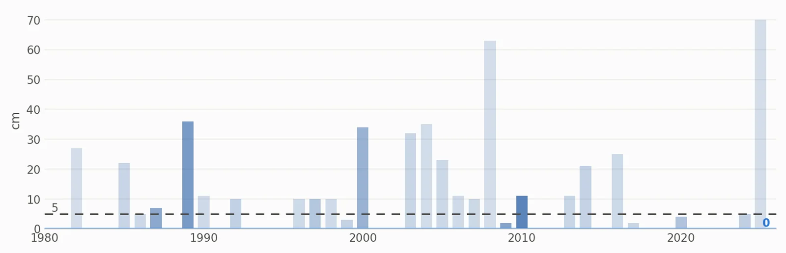

Bou Iblane a dicembre 2026: pendii spogli, un mese caldo e poche probabilità di neve nel Medio Atlante
Bou Iblane il 10 novembre non mostra neve lungo il suo crinale elevato né sui picchi circostanti dell'Atlante Centrale orientale. L'outlook di dicembre è decisamente caldo e riduce le probabilità di neve: dove queste montagne di solito ricevono neve invernale, quest'anno la probabilità di superare la media è solo del 30-39 percento.
Le previsioni neve in tempo reale per Bou Iblane nell'app SnowScopeAltezza neve, allerte powder e mappa 3D, gratis.

Il massiccio spogli oggi
Percorri le terre alte intorno a Bou Iblane e troverai roccia nuda e ghiaione. La mappa SnowScope del 10 novembre non mostra nulla di bianco entro 60 km dalla vetta a 2700 m. Mostriamo il terreno invece: il lungo crinale di Bou Iblane stesso, e a est la massa separata di Bou Naceur. Questi sono i picchi dove la neve invernale inizia a stabilirsi quando la stagione cambia.
A novembre l'Atlante Centrale è ancora caldo e secco. Tutte le 13 celle di griglia montagna della regione pendono verso meno neve rispetto ai dicembri passati, e nessuna mostra un segnale di pendenza verso più. Questa inclinazione è guidata dal caldo, non da un'atmosfera secca.
Cosa porta solitamente dicembre
In alto su Bou Iblane vicino a 2700 m, un dicembre tipico deposita 23 cm di neve fresca. Entro il 31 dicembre, solo 5 cm rimangono al suolo. Il sole e le ondate di caldo tra le tempeste sciolgono la maggior parte. Queste sono montagne secche dove la neve non si accumula a meno che il freddo persista o polvere fresca arrivi quotidianamente.
L'intervallo da dicembri meno nevosi a più nevosi nel passato è ampio: un quarto degli inverni passati è terminato senza neve, mentre un quarto ha avuto 11 cm o più. L'outlook di quest'anno riduce quell'intervallo verso il basso. Le probabilità di terminare dicembre più profondo dei tipici 5 cm sono solo del 30 percento.

Il caldo è il driver principale
I 51 forecast dal centro meteorologico europeo concordano fortemente su un punto: dicembre sarà caldo. Il novantasei percento di loro prevede temperature sopra la media, con un riscaldamento medio di 2,3 gradi Celsius nell'Atlante Centrale. Tale ampio accordo sul caldo è raro.
Sulle precipitazioni i forecast si dividono: il 41 percento è più umido del solito, il 59 percento è più secco. In media prevedono il 2 percento di pioggia e neve in più rispetto ai 42 mm tipici di dicembre, un piccolo surplus. Eppure in queste montagne, la temperatura conta più del totale delle precipitazioni. La neve risponde a entrambe: segue da vicino le precipitazioni (correlazione 0,86), ma il caldo allontana la neve (correlazione -0,38). Un paio di gradi di calore extra trasforma la neve che cade in pioggia sui pendii inferiori e accelera lo scioglimento su quelli più alti.


Quali dicembri passati corrispondono a questo modello
Il sistema stagionale trova i suoi migliori riscontri storici a dicembre 2022, dicembre 2010 e dicembre 2002. Questi tre inverni hanno condiviso masse d'aria caldi e nevate sparse sull'Atlante. Nessuno ha fornito una buona base di neve entro la fine del mese.
Eppure la storia mostra anche una clausola di fuga: una singola potente tempesta atlantica può invertire il quadro in pochi giorni. Quando l'aria fredda e le precipitazioni organizzate si allineano, Bou Iblane e i suoi picchi vicini diventano bianchi velocemente. Tali tempeste sono rare a dicembre ma non impossibili. L'outlook mensile è un'inclinazione della probabilità, non una previsione scolpita nella pietra.

Dove guardare quando la neve arriva
Se dicembre porta un evento di neve, il crinale elevato di Bou Iblane lo catturerà per primo, specialmente sui pendii rivolti a nord sopra i 2700 m. Questi aspetti tengono la neve più a lungo perché il sole invernale rimane basso e debole. I pendii rivolti a sud perdono la loro copertura rapidamente una volta che inizia uno scioglimento.
La differenza tra un mese spogli e una sorpresa nevosa spesso si restringe a una o due settimane all'inizio di dicembre. Monitora da vicino il forecast a 7 giorni. Quando i previsori chiamano un sistema freddo e umido dal nord-ovest, è quando pianificare l'ascensione. Tra tali sistemi, aspettati scioglimento e ritiro.
Consigli per sciatori
- Pianifica escursioni su Bou Iblane usando il forecast a 7 giorni, non l'outlook mensile. La guida settimanale ti dice quando la neve sta effettivamente cadendo.
- Dopo qualsiasi tempesta di dicembre, vai verso pendii rivolti a nord e crinali sopra i 2700 m dove la neve rimane più a lungo al sole invernale forte.
- Controlla la mappa SnowScope prima di partire. In un dicembre caldo, la neve su questi pendii elevati spesso si scioglie entro tre o cinque giorni.
- Porta acqua extra e protezione dal sole: anche quando neve fresca si trova su terre alte, il sole di dicembre a 2700 m è luminoso e l'aria è secca.
- Se pianifichi una traversata invernale del crinale, inizia presto a dicembre e monitora i forecast quotidianamente. Un mese caldo e spogli può diventare bianco dalla notte al giorno quando arrivano tempeste atlantiche.
Su questi numeri
Le altezze neve delle località sono la neve più alta sui pendii superiori alla data indicata; sono stime per un'area, non una misura in un punto. Le previsioni possono cambiare. Leggi sempre il bollettino valanghe ufficiale prima del fuoripista.
Cita questo articolo
Per ricerca, didattica o stampa: numeri e grafici sono liberamente riutilizzabili con licenza CC BY 4.0 citando così.
SnowScope (2026), Bou Iblane a dicembre 2026: pendii spogli, un mese caldo e poche probabilità di neve nel Medio Atlante, https://snowscope.app/blog/it/2026/11/bou-iblane-december-2026-snow-outlook.html, consultato il 2026-11-10
SnowScope (Atlas Labs). (2026, November 10). Bou Iblane a dicembre 2026: pendii spogli, un mese caldo e poche probabilità di neve nel Medio Atlante. SnowScope snow reports. https://snowscope.app/blog/it/2026/11/bou-iblane-december-2026-snow-outlook.html
BibTeX
@misc{snowscope2026bouiblanedecember2026sno,
author = {{SnowScope (Atlas Labs)}},
title = {Bou Iblane a dicembre 2026: pendii spogli, un mese caldo e poche probabilità di neve nel Medio Atlante},
year = {2026},
month = nov,
howpublished = {\url{https://snowscope.app/blog/it/2026/11/bou-iblane-december-2026-snow-outlook.html}},
note = {Published 2026-11-10 10:48 UTC; accessed 2026-11-10}
}· CC BY 4.0 · Metodi, dati e strumenti →
Segui Bou Iblane
Gratis: un messaggio quando arriva la neve e il meteo ogni mattina.